Semantic-Cortical Components: A Multisubject Coupled Sparse Autoencoder for Interpretable Language Encoding in fMRI
I built a model that learns 50 components from people listening to stories. Each component is a kind of meaning, such as numbers or family, paired with a map of where the brain responds to it, and the six listeners share the same set.
c8 spoken numbers and quantities
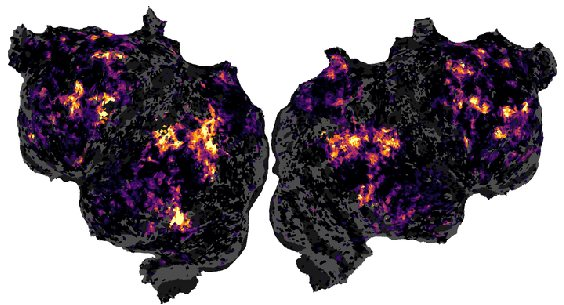
UTS02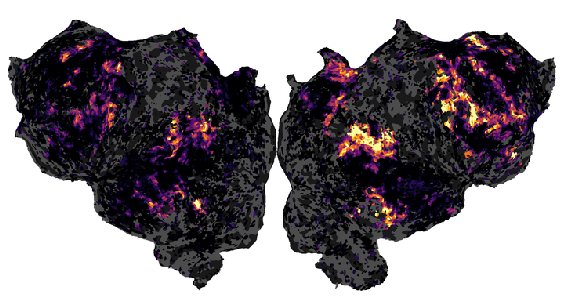
UTS03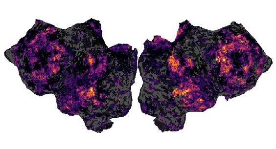
UTS06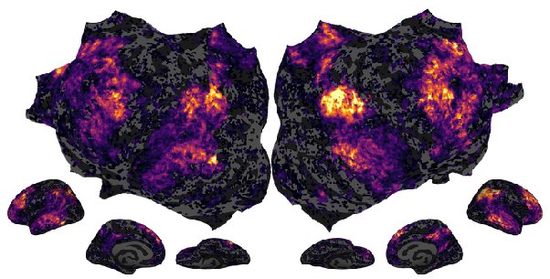
Average of all six- …wilson stephanie wilson is about five foot two and weighs about a hundred pounds stephanie…
- …anorexically petite friends growing up at five foot five a hundred and forty pounds it was universally…
- …with his pipes he could either be five foot or up to six four he said he didn’t know how tall he would…
c23 references to family members and personal relations
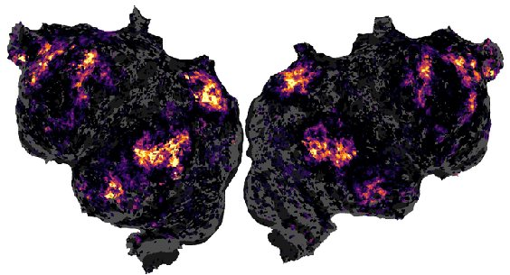
UTS02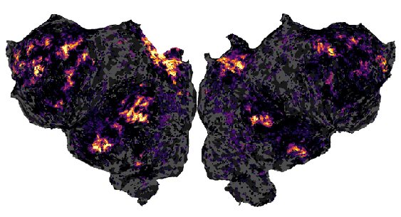
UTS03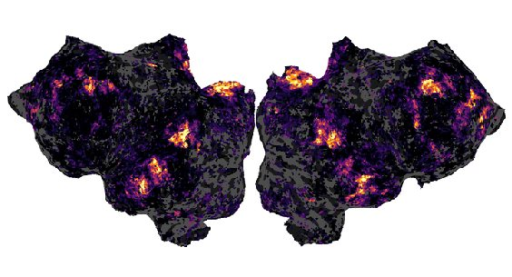
UTS06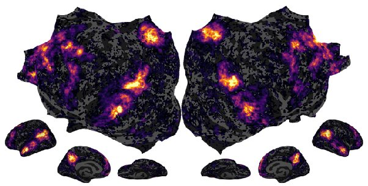
Average of all six- …worked out fine so i even had a friend named neil whose parents had done the same thing you know…
- …or two later this great grandmother who had worried about them and prayed for them for years and…
- …and then a few years into high school my mom told me that she was getting remarried and we were…
c2 clothing, outfits and physical appearance descriptions
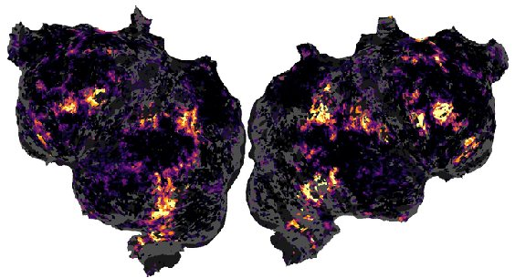
UTS02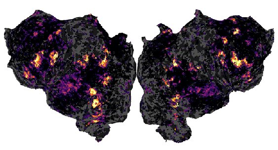
UTS03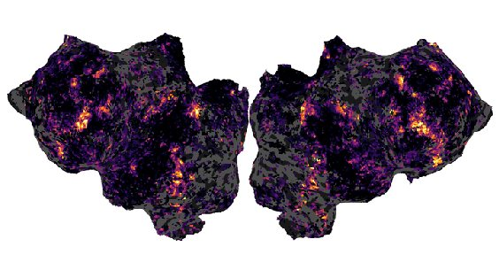
UTS06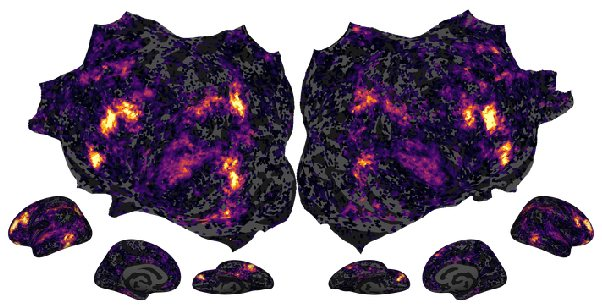
Average of all six- …she was just very badly dressed like pink and red together and stripes and i thought she can’t put…
- …right on the side thing and his hair and his beard and he’s got the th you know thing and a bunch…
- …like blonde she’s petite she was waify she had a pert nose and like no visible body hair it was just like…
c45 natural landscape and scenery descriptions
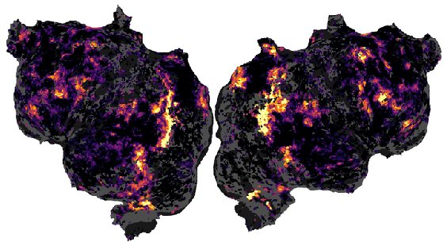
UTS02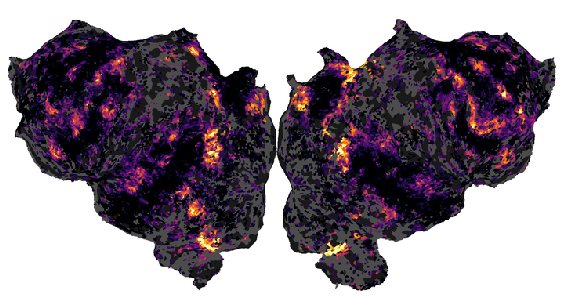
UTS03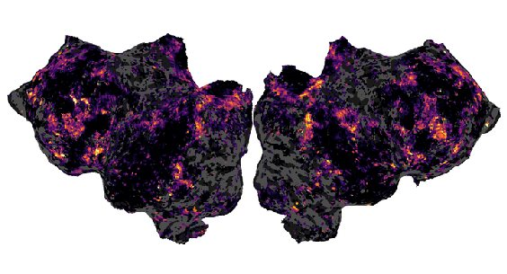
UTS06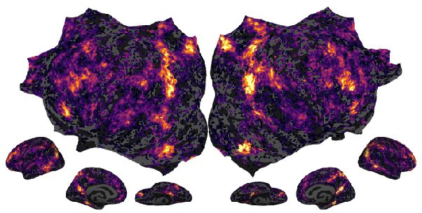
Average of all six- …shore of lake cayuga there’s flatland and these hills and it has a a very particular microclimate there…
- …that almost impossible stretch of road carved into the divide of steep mountain rock and ocean i had…
- …giant stone cliffs like two mighty cliffs where the crack in between there was a small path and you are…

Written for this page from the camera-ready paper. It was submitted as Learning Sparse Semantic-Cortical Atoms for Multisubject Naturalistic fMRI Encoding, which called the components “atoms”; the conference listing may still show that title.
The idea
Large language models are good at predicting how the brain responds to speech. Play a story to someone in an fMRI scanner, feed the same story to a language model, and a simple fitted map from the model’s internal numbers to the brain predicts responses across much of the brain. What those numbers mean is another matter.
The obstacle is that a language model is thought to pack far more ideas than it has numbers, so each number carries a mix of many ideas, like a smoothie you can taste but not take apart. The brain side has a similar problem: the usual model fits every small patch of brain separately and every person separately, so a shared layout has to be pieced together afterward, if at all.
My model tackles both at once. Each moment of the story is squeezed into 50 components, only five of which may be on at a time. From those five, the model has to rebuild the language model’s numbers and also predict the brain responses of six listeners. A component that serves both jobs becomes two things at once: a kind of meaning, and a map of where that meaning drives the brain in each listener. Squeezed this hard, the model still keeps about 82% of the brain-prediction accuracy of a standard model that reads all 2,304 of the language model’s numbers.
- 1 · A moment of a story “…stephanie wilson is about five foot two and weighs about a hundred pounds…”
- 2 · The language model’s reading 2,304 numbers, every meaning mixed in
- 3 · 50 components, five on lit here: c8, numbers, and four others
- 4 · Two jobs from the same five Rebuild the language model’s 2,304 numbers Predict the brain response of each of six listeners
The paper’s own diagram of the model (Fig. 1)
![A diagram in three panels. Panel a: a story excerpt goes through Gemma-2-2b, layer 25, to a 2304-dimensional activation vector, and through a shared encoder with ReLU and TopK to a sparse code of 50 components with 5 active. A semantic decoder reconstructs the activations from the code; a brain decoder for each of six subjects predicts 30,000 voxels from copies of the code delayed by 2 to 8 seconds; the two losses are added. Panel b: component c18 as column 18 of the semantic decoder, described by the LLM judge as food and drink items and meals, with three top excerpts, and as a cortical map in subjects UTS02, UTS03 and UTS06. Panel c: the component’s activation, convolved with its learned delay scales, gives a response 2 to 8 seconds later.](../figures/components-fig1.jpg)
What it found
Each component can be named, and its map looks alike across people
To name a component, another language model reads the passages that switch it on and writes one sentence. For nearly every component, that sentence picks out which unseen passages will switch it on. The maps agree across the six listeners even though the model was never told how one brain lines up with another, and many match brain networks known from other studies. Five components follow the rhythm of speech, its pauses and fast stretches, rather than its meaning.
Most components come back when the model is retrained
Retrained from a different random start, the model learns most of the same components again. The few that do not return reliably are narrow or tied to a single story, so I treat the components as a useful description rather than the brain’s one true set of parts. The list of all 50 below shows how reliably each returns.
Training the two halves together is what makes this work
The same model can also be trained in two steps, learning the components from the language model first and fitting them to the brain afterward, or the other way round. Each version falls short where its first step did not look. Learned from meaning first, the components predict the brain worse and their maps agree less across people. Learned from the brain first, they predict the brain slightly better but rebuild meaning poorly, are harder to name and return less often.
| Trained jointlythis paper’s model | Meaning first,then fit to the brain | Brain first,then fit to meaning | |
|---|---|---|---|
| The two jobs | |||
| Predicts brain activity | does well | falls short | does well |
| Rebuilds the language model’s reading of the story | does well | does well | falls short |
| Three qualities of the components | |||
| Each can be named in a sentence | does well | does well | falls short |
| Their brain maps agree across people | does well | falls short | does well |
| They come back when the model is retrained | does well | does well | falls short |
The components carry over to new people
For two people the model never saw, I kept the components fixed and fitted only a small new readout from them to each person’s brain, with about 2% of the adjustable weights of the standard model. Given the same data, it recovered most of the standard model’s accuracy for one person and all of it for the other.
All 50 components
The two marks on each line show how reliably the component’s map returns when the model is retrained (circle) and how well it agrees across the six listeners (diamond); further right is better. “See its maps” opens the ten whose maps are on this page.
- comes back when the model is retrained
- map agrees across people
- agreement not above chance
- c0people looking at each other, eye contact and facial expressionsagreement across people 0.25, stable when retrained 0.73
- c1story-opening setup: a child’s school and family expectationsagreement across people 0.08, stable when retrained 0.47
- c2clothing, outfits and physical appearance descriptions see its mapsagreement across people 0.28, stable when retrained 0.87
- c3physical places and venues where things are seen or encounteredagreement across people 0.06, not above chance, stable when retrained 0.97
- c4dogs, puppies and baby animalsagreement across people 0.03, not above chance, stable when retrained 0.25
- c5story-opening component see its mapsagreement across people 0.40, stable when retrained 0.89
- c6place names and geographic locations people live in or move toagreement across people 0.28, stable when retrained 0.73
- c7crowds and groups acting collectively and noisilyagreement across people 0.17, stable when retrained 0.58
- c8spoken numbers and quantities see its mapsagreement across people 0.20, stable when retrained 0.91
- c9film and camera/photography equipmentagreement across people 0.14, stable when retrained 0.51
- c10religion, faith and cultural/group identityagreement across people 0.24, stable when retrained 0.58
- c11sequences of physical actions by a third person, mostly a managreement across people 0.29, stable when retrained 0.78
- c12abstract reflective emotional language late in storiesagreement across people 0.15, stable when retrained 0.68
- c13lists of required tasks and proceduresagreement across people 0.09, stable when retrained 0.46
- c14evaluative summary statements of an experienceagreement across people 0.14, stable when retrained 0.58
- c15shared relationship and closeness using ‘we’agreement across people 0.15, stable when retrained 0.63
- c16first-person searching, sifting and looking aroundagreement across people 0.22, stable when retrained 0.60
- c17therapy, counseling and self-help groupsagreement across people 0.09, stable when retrained 0.41
- c18food and drink items and mealsagreement across people 0.22, stable when retrained 0.79
- c19Oregon Trail wagon-train scenarioagreement across people 0.06, not above chance, stable when retrained 0.30
- c20letters, documents and written objects see its mapsagreement across people 0.13, stable when retrained 0.78
- c21rapid-speech component speech timingagreement across people 0.03, not above chance, stable when retrained 0.98
- c22first-person travel and locomotion from place to placeagreement across people 0.28, stable when retrained 0.76
- c23references to family members and personal relations see its mapsagreement across people 0.32, stable when retrained 0.72
- c24forceful physical body actions and struggle see its mapsagreement across people 0.29, stable when retrained 0.87
- c25introspective first-person feeling/thinking statementsagreement across people 0.22, stable when retrained 0.88
- c26navy water-survival/parachute training proceduresagreement across people 0.11, stable when retrained 0.51
- c27spatial descriptions of rooms and built locationsagreement across people 0.35, stable when retrained 0.77
- c28describing plural groups or categories of people see its mapsagreement across people 0.30, stable when retrained 0.76
- c29mostly the repeated shouted command ‘pick up the gun’; no unified conceptagreement across people 0.09, stable when retrained 0.89
- c30silence-firing component speech timing see its mapsagreement across people 0.35, stable when retrained 0.96
- c31quotative ‘I was like / he was like’ reported dialogue and reactionsagreement across people 0.37, stable when retrained 0.86
- c32medical procedures and hospital treatmentagreement across people 0.06, not above chance, stable when retrained 0.50
- c33foreign-language phrases, unusual words and proper namesagreement across people 0.31, stable when retrained 0.66
- c34biographical career/education milestonesagreement across people 0.16, stable when retrained 0.51
- c35religious and funeral ritual actionsagreement across people 0.03, not above chance, stable when retrained 0.40
- c36narrator framing and transition phrasesagreement across people 0.30, stable when retrained 0.68
- c37urgent fast-paced first-person movement sequencesagreement across people 0.11, stable when retrained 0.91
- c38unusual tokensagreement across people 0.24, stable when retrained 0.90
- c39describing a person’s personality and character traitsagreement across people 0.05, not above chance, stable when retrained 0.65
- c40states of physical or emotional sufferingagreement across people 0.15, stable when retrained 0.64
- c41first-person self-reflective statements about own tendencies and feelingsagreement across people 0.29, stable when retrained 0.68
- c42habitual or hypothetical ‘you would / we would’ procedural narrationagreement across people 0.21, stable when retrained 0.54
- c43casual vernacular quoted dialogue with ‘he’s like / I’m like’agreement across people 0.21, stable when retrained 0.64
- c44quoted questions, requests and instructions in dialogueagreement across people 0.01, not above chance, stable when retrained 0.98
- c45natural landscape and scenery descriptions see its mapsagreement across people 0.24, stable when retrained 0.78
- c46quoted speech directly addressing ‘you’ with propositions, questions or commands see its mapsagreement across people 0.38, stable when retrained 0.78
- c47silence-firing component speech timingagreement across people 0.11, stable when retrained 0.95
- c48rapid-speech component speech timingagreement across people 0.17, stable when retrained 0.98
- c49silence-firing component speech timingagreement across people 0.20, stable when retrained 0.70
c24 forceful physical body actions and struggle
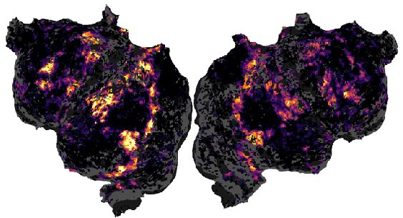
UTS02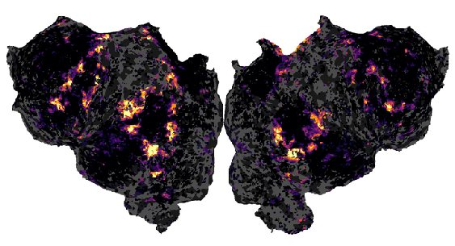
UTS03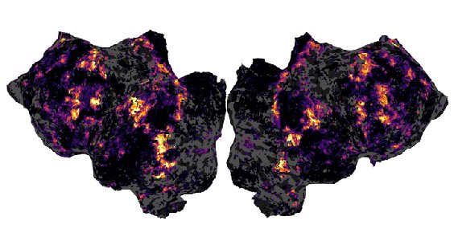
UTS06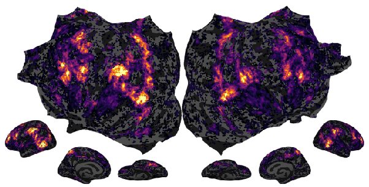
Average of all six- …into the door and using my elbows i swing to the right so that as i swing to the left i use his weight…
- …libre and jumped right onto the goat and got him in a headlock and then he started yelling at me la…
- …hands and drop them i had to hold them with my feet and drop them i had to they would sort of say…
c20 letters, documents and written objects
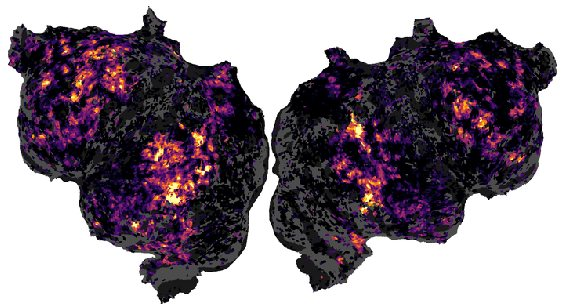
UTS02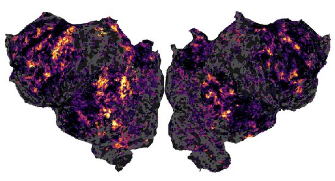
UTS03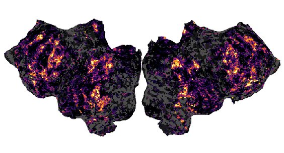
UTS06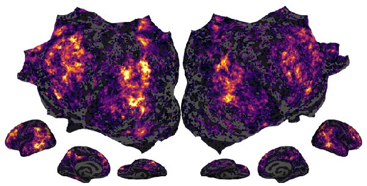
Average of all six- …gonna happen but i had to take a chance i wrote the letter and i sent it and hoped for the best and…
- …i didn’t really know how to write one my dad had to help me put the stamp on the right part of the…
- …came in the mail and the cover letter had a paragraph at the beginning that said congratulations and…
c28 describing plural groups or categories of people
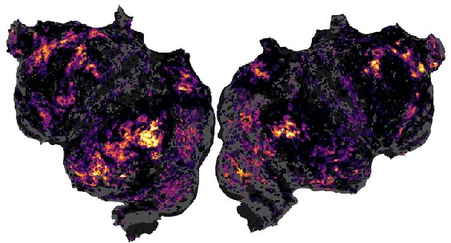
UTS02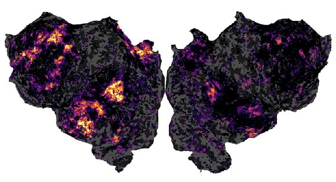
UTS03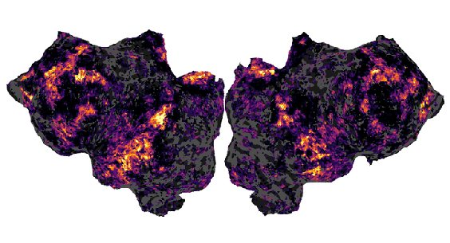
UTS06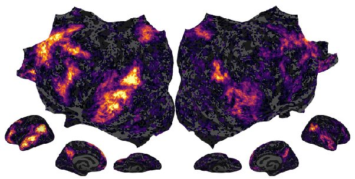
Average of all six- …bucks um also these are not the i these are all my friends i love them some of them are here…
- …whole quarter so i was with all these swedish and german girls and it was even better than being a…
- …they were catholic they were family we were like the relatives that they never got to see but we knew…
c46 quoted speech directly addressing ‘you’ with propositions, questions or commands
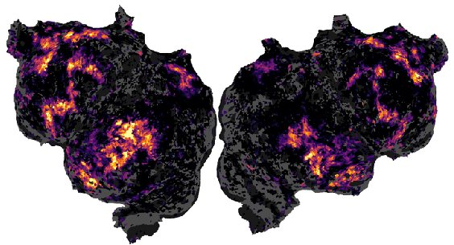
UTS02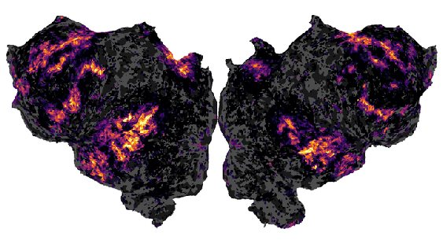
UTS03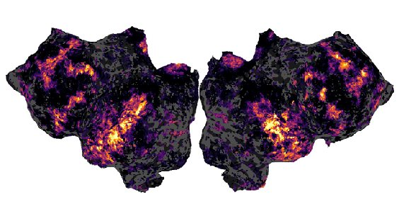
UTS06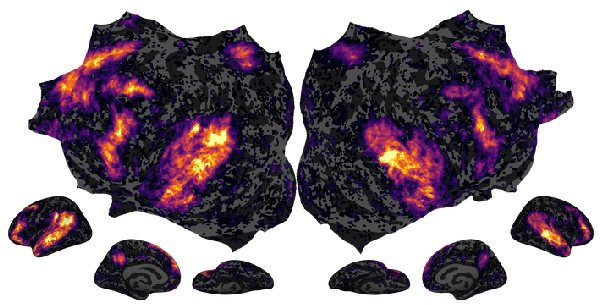
Average of all six- …and he just looks at me and says are your parents gonna mind you taking the train home late at…
- …my friend mark is the kind of person who will say to you if you get a tattoo i’ll pay for it so that means…
- …lady cut her off and said ma’am take the form take it to the desk fill it out and come back next my…
c5 story-opening component
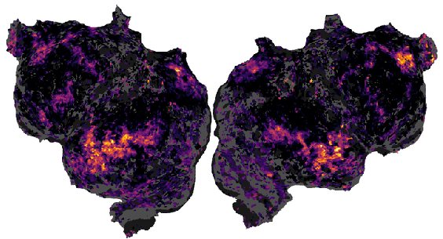
UTS02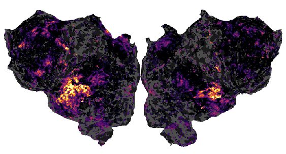
UTS03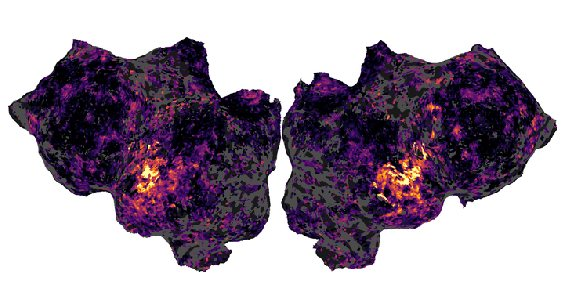
UTS06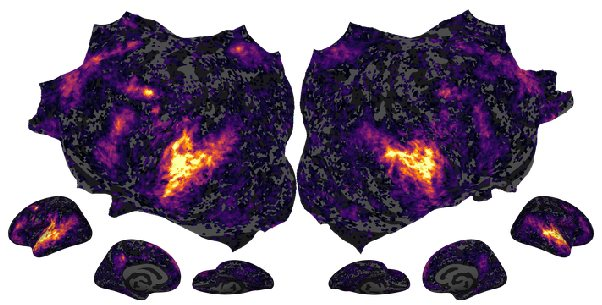
Average of all sixIt marks the start of a story, a pattern in the telling rather than a topic.
- …really good in school so it fell into this pattern with my family where people would say things like…
- …so the story begins in in uh yes i we yes i was employed back then ok i don’t know why you laughed…
- …a very usual thing i had been touring for years and years seven or eight years by that point so um it…
c30 silence-firing component
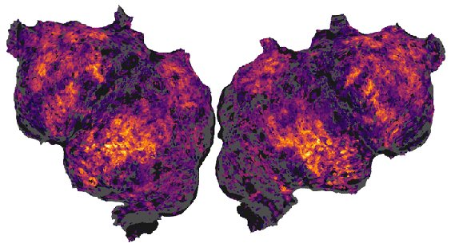
UTS02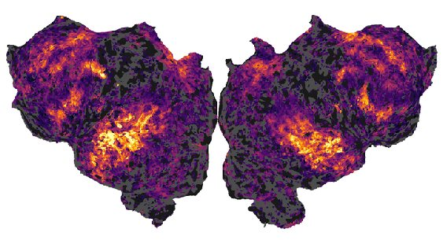
UTS03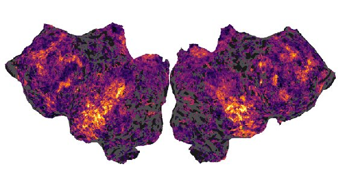
UTS06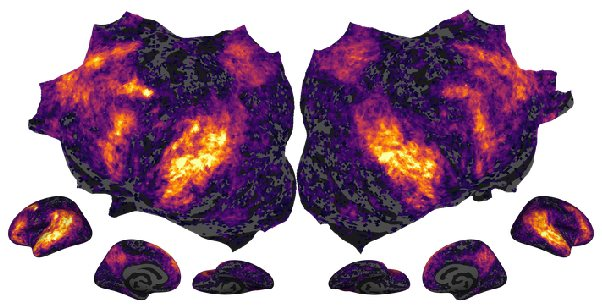
Average of all sixIt fires in pauses. It is the one component whose firing predicts a drop in brain response; the maps show the size of that drop.
- …on eat it i don’t want to eat it eat it [silence] so i’m like driving back and that’s all i’m thinking like this…
- …click on it and it takes me to craigslist [silence] yes do we know what craigslist is if anyone here doesn’t…
- …and ask him real quick though [silence] so then we were up to four children one girl and three…
For specialists: every value for the 50 components (Table 15 of the paper)
| # | Description | AUC | z | Stab. | Cross-subj. r | Active | Yeo 7 | NS term | r | q |
|---|---|---|---|---|---|---|---|---|---|---|
| c0 | people looking at each other, eye contact and facial expressions | 1.00 | 5.0 | 0.73 | 0.25* | 4% | DMN | arousal | −0.020 | 0.813 |
| c1‡ | story-opening setup: a child’s school and family expectations | 0.94 | 8.8 | 0.47 | 0.08* | 3% | DMN | autobiographical | +0.137 | 0.050* |
| c2 | clothing, outfits and physical appearance descriptions | 1.00 | 9.1 | 0.87 | 0.28* | 3% | DAN, FPN | color | +0.318 | 0.006* |
| c3 | physical places and venues where things are seen or encountered | 0.87 | 3.3 | 0.97 | 0.06 | 11% | VAN | place | +0.021 | 0.454 |
| c4‡ | dogs, puppies and baby animals | 1.00 | 11.9 | 0.25 | 0.03 | 1% | FPN, DMN | categorization | +0.120 | 0.068 |
| c5 | story-opening component | 1.00 | 1.0 | 0.89 | 0.40* | 11% | SMN | episodic | −0.040 | 0.918 |
| c6 | place names and geographic locations people live in or move to | 1.00 | 4.9 | 0.73 | 0.28* | 6% | DMN | location | +0.005 | 0.682 |
| c7 | crowds and groups acting collectively and noisily | 0.99 | 6.5 | 0.58 | 0.17* | 4% | DMN | music | +0.096 | 0.125 |
| c8 | spoken numbers and quantities | 1.00 | 1.8 | 0.91 | 0.20* | 6% | FPN | language | +0.271 | 0.006* |
| c9‡ | film and camera/photography equipment | 0.69 | 10.8 | 0.51 | 0.14* | 4% | FPN | object | +0.121 | 0.282 |
| c10 | religion, faith and cultural/group identity | 0.81 | 3.9 | 0.58 | 0.24* | 5% | DMN | social | +0.272 | 0.006* |
| c11 | sequences of physical actions by a third person, mostly a man | 1.00 | 6.2 | 0.78 | 0.29* | 3% | DMN | verbs | +0.139 | 0.012* |
| c12 | abstract reflective emotional language late in stories | 0.98 | 4.5 | 0.68 | 0.15* | 7% | FPN | emotional | +0.017 | 0.603 |
| c13‡ | lists of required tasks and procedures | 0.90 | 3.0 | 0.46 | 0.09* | 5% | DMN | executive | +0.043 | 0.356 |
| c14 | evaluative summary statements of an experience | 1.00 | 2.9 | 0.58 | 0.14* | 5% | — | autobiographical | +0.001 | 0.751 |
| c15 | shared relationship and closeness using ‘we’ | 0.98 | 9.3 | 0.63 | 0.15* | 4% | DAN, FPN | familiarity | +0.067 | 0.116 |
| c16 | first-person searching, sifting and looking around | 1.00 | 4.5 | 0.60 | 0.22* | 4% | FPN | multisensory | −0.025 | 0.841 |
| c17‡ | therapy, counseling and self-help groups | 1.00 | 10.6 | 0.41 | 0.09* | 2% | — | stress | +0.025 | 0.642 |
| c18 | food and drink items and meals | 1.00 | 7.8 | 0.79 | 0.22* | 4% | DAN, FPN | food | +0.094 | 0.158 |
| c19‡ | Oregon Trail wagon-train scenario | 0.95 | 6.7 | 0.30 | 0.06 | 1% | DMN | navigation | −0.120 | 1.000 |
| c20 | letters, documents and written objects | 0.95 | 7.0 | 0.78 | 0.13* | 3% | DAN, FPN | nouns | +0.243 | 0.012* |
| c21 | rapid-speech component | 0.94 | 5.5 | 0.98 | 0.03 | 41% | DMN | voice | +0.149 | 0.006* |
| c22 | first-person travel and locomotion from place to place | 1.00 | 2.9 | 0.76 | 0.28* | 7% | FPN, DMN | motion | −0.070 | 0.986 |
| c23 | references to family members and personal relations | 1.00 | 3.1 | 0.72 | 0.32* | 6% | DMN | autobiographical | +0.433 | 0.006* |
| c24 | forceful physical body actions and struggle | 1.00 | 7.2 | 0.87 | 0.29* | 8% | DAN, VAN | action | +0.366 | 0.006* |
| c25 | introspective first-person feeling/thinking statements | 0.98 | 4.1 | 0.88 | 0.22* | 22% | DMN | autobiographical | +0.140 | 0.085 |
| c26 | navy water-survival/parachute training procedures | 1.00 | 24.3 | 0.51 | 0.11* | 1% | DAN, FPN | planning | +0.092 | 0.187 |
| c27 | spatial descriptions of rooms and built locations | 1.00 | 3.6 | 0.77 | 0.35* | 5% | DAN | spatial | +0.103 | 0.118 |
| c28 | describing plural groups or categories of people | 1.00 | 3.6 | 0.76 | 0.30* | 7% | DMN | nouns | +0.251 | 0.047* |
| c29 | mostly the repeated shouted command ‘pick up the gun’; no unified concept | 0.84 | 0.3 | 0.89 | 0.09* | 8% | SMN | execution | +0.033 | 0.521 |
| c30 | silence-firing component | 0.95 | 4.0 | 0.96 | 0.35* | 53% | DMN | sound | +0.409 | 0.006* |
| c31 | quotative ‘I was like / he was like’ reported dialogue and reactions | 0.87 | 4.2 | 0.86 | 0.37* | 12% | DMN | speech | +0.323 | 0.006* |
| c32 | medical procedures and hospital treatment | 1.00 | 7.5 | 0.50 | 0.06 | 3% | FPN, DMN | execution | −0.061 | 0.987 |
| c33 | foreign-language phrases, unusual words and proper names | 0.85 | 1.0 | 0.66 | 0.31* | 17% | DMN | lexical | +0.400 | 0.006* |
| c34 | biographical career/education milestones | 1.00 | 9.0 | 0.51 | 0.16* | 1% | — | autobiographical | −0.028 | 0.954 |
| c35‡ | religious and funeral ritual actions | 1.00 | 12.7 | 0.40 | 0.03 | 2% | FPN, DMN | verbs | +0.165 | 0.012* |
| c36 | narrator framing and transition phrases | 0.93 | 1.0 | 0.68 | 0.30* | 8% | FPN | syntactic | −0.025 | 0.784 |
| c37 | urgent fast-paced first-person movement sequences | 0.91 | 7.1 | 0.91 | 0.11* | 8% | VAN, FPN | movement | −0.068 | 1.000 |
| c38 | unusual tokens | 0.99 | 3.4 | 0.90 | 0.24* | 17% | — | nouns | +0.378 | 0.006* |
| c39 | describing a person’s personality and character traits | 1.00 | 3.8 | 0.65 | 0.05 | 3% | — | affective | +0.070 | 0.225 |
| c40 | states of physical or emotional suffering | 0.97 | 4.3 | 0.64 | 0.15* | 4% | FPN | anxiety | +0.031 | 0.542 |
| c41 | first-person self-reflective statements about own tendencies and feelings | 0.98 | 4.1 | 0.68 | 0.29* | 6% | DAN, FPN | autobiographical | −0.130 | 1.000 |
| c42 | habitual or hypothetical ‘you would / we would’ procedural narration | 0.99 | 4.3 | 0.54 | 0.21* | 4% | DMN | episodic | +0.124 | 0.164 |
| c43 | casual vernacular quoted dialogue with ‘he’s like / I’m like’ | 0.98 | 10.5 | 0.64 | 0.21* | 7% | DMN | imitation | +0.034 | 0.567 |
| c44 | quoted questions, requests and instructions in dialogue | 0.92 | 4.8 | 0.98 | 0.01 | 25% | DMN | speech | +0.305 | 0.006* |
| c45 | natural landscape and scenery descriptions | 1.00 | 8.0 | 0.78 | 0.24* | 4% | DAN, FPN | imagery | +0.149 | 0.006* |
| c46 | quoted speech directly addressing ‘you’ with propositions, questions or commands | 0.93 | 3.0 | 0.78 | 0.38* | 9% | DMN | speech | +0.467 | 0.006* |
| c47 | silence-firing component | 1.00 | 2.6 | 0.95 | 0.11* | 41% | VAN | sound | +0.191 | 0.025* |
| c48 | rapid-speech component | 1.00 | 1.6 | 0.98 | 0.17* | 41% | SMN | voice | +0.506 | 0.006* |
| c49 | silence-firing component | 1.00 | 2.5 | 0.70 | 0.20* | 34% | VAN | sound | +0.256 | 0.016* |
Descriptions and AUC come from the LLM judge (Claude Fable 5.1); the paper shortened the descriptions by dropping the judge’s parenthetical examples. AUC = AutoInterp AUC, the nameability score. z = semantic coherence. Stab. = cross-seed stability of the cortical map (the circle above). Cross-subj. r = cross-subject consistency of the cortical map, the mean Pearson r over the 15 subject pairs (the diamond above); * marks significance against the shuffled-component permutation null at BH-FDR q < 0.05. Active = fraction of training time points at which the component is among the 5 active ones. Yeo 7 = significant resting-state networks: DMN default mode, FPN frontoparietal, DAN dorsal attention, VAN ventral attention, SMN somatomotor; — none. NS term = the matched Neurosynth term, with its map correlation r and FDR-corrected q (* q < 0.05). ‡ marks the 7 components whose best-match cosine, averaged over 19 reseeded models, is below 0.5 for the semantic-decoder column or the cortical map.
Why it matters
The aim is a unit a neuroscientist can work with directly: choose a component by its description, read its map in every person, and compare that map with known brain networks, with no hand-made categories and no after-the-fact alignment of people. It extends my 2025 paper, which separated concepts first and fitted the brain second. All results so far come from one dataset, one language model and one test story; other datasets are the next test.
For the details, the measurements behind each statement and the analysis of every component, see the paper. Its abstract follows.
Abstract
Encoding models built on language-model activations predict cortical responses to natural language well but are hard to interpret: semantic selectivity is not identifiable in a dense, correlated activation space; cortical organization stays implicit in voxelwise weights; and correspondence across subjects is usually established only after fitting. To address all three, we introduce a multisubject coupled sparse autoencoder (SAE), trained jointly to reconstruct language-model activations and to predict the brain responses of six subjects from one sparse code. Each of the 50 code dimensions, which we call semantic-cortical components, pairs a semantic direction with a cortical map in every subject. On story-listening fMRI, the code retains about 82% of the brain-prediction accuracy of a ridge regression fit on all 2,304 activation dimensions, with only five components active per time point. We evaluate the components on three properties. First, nameability: an LLM judge’s one-sentence description of a component predicts which held-out text activates it. Second, cross-subject consistency: their cortical maps agree across subjects. Many maps also align with resting-state networks and meta-analytic maps of published studies. Third, cross-seed stability: many components recur when the model is retrained, though not all. Only the coupled SAE does well on all three properties; matched models trained on the two objectives in sequence do not. The code also transfers to new subjects: for two subjects unseen in training, a linear readout from the frozen code, fit on 22 stories each, recovers 87% and 102% of the brain-prediction accuracy of ridge with about 2% of its parameters. Together, the components give cognitive neuroscience an interpretable unit of analysis for semantic-to-brain encoding: each links a semantic feature to its cortical response pattern in every subject.
BibTeX
@inproceedings{zeng2026components,
title = {Semantic-Cortical Components: A Multisubject Coupled Sparse
Autoencoder for Interpretable Language Encoding in {fMRI}},
author = {Zeng, Alicia},
booktitle = {Advances in Neural Information Processing Systems 39 (NeurIPS 2026)},
year = {2026},
note = {Oral},
url = {https://openreview.net/forum?id=YcEZoSqrxa}
}